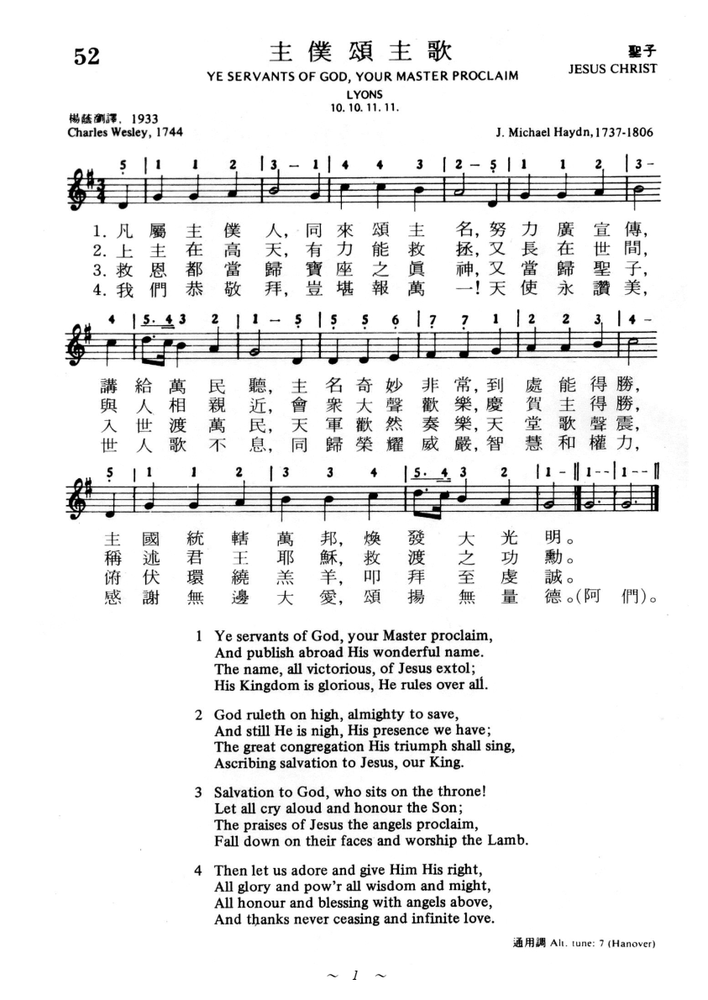

0582 You Servants of God, Your Master Proclaim _Charles
Wesley 神僕當頌主 HANOVER
| 簡介
You Servants of God, Your Master Proclaim |
| This hymn resembles many 18th-century
drawings that show parallels between worship on earth and worship in
heaven, especially as described in Revelation 7:9–11. This 18th-century
tune has had many names; the one used here honors the dynasty of British
monarchs, 1714–1901. |
|
|
主僕頌主 |
|
1 You servants of God, your Master proclaim,
and publish abroad his wonderful name;
the name all-victorious of Jesus extol;
his kingdom is glorious and rules over all.
2 God rules in the height, almighty to save;
though hid from our sight, his presence we have;
the great congregation his triumph shall sing,
ascribing salvation to Jesus our King.
3 "Salvation to God, who sits on the throne!"
let all cry aloud, and honor the Son;
the praises of Jesus the angels proclaim,
fall down on their faces and worship the Lamb.
4 Then let us adore and give him his right:
all glory and power, all wisdom and might,
all honor and blessing with angels above
and thanks never ceasing for infinite love.
Psalter Hymnal, 1987
|
歌詞:
屬主眾僕人，主恩當述說，
處處要宣揚救主奇妙名；
救主國度榮耀，祂統治萬民，
耶穌得勝聖名，配受人頌稱。
神高天統治，大能施拯救，
又常在人間，活在信徒中；
會眾同聲歡唱，慶賀主得勝，
稱頌君王耶穌，救贖大功成。
救贖的宏恩，歸與至高神，
讓我眾揚聲，榮耀聖子名；
讚美救主耶穌，天使歌不停，
羔羊面前俯伏，叩拜至虔誠。
我們當敬拜，主配受尊崇，
智慧與權柄，皆歸主聖名；
與眾天使讚美主的大權能，
感謝無窮大愛，歌聲永不停。 |
|
https://www.zanmeishi.com/tab/25802.html

 |
| |
|
https://vinemedia.org/bible-spirituality/hymn/hymn-ye-servants-of-god/
https://hymnary.org/text/ye_servants_of_god_your_master_proclaim
Notes
Scripture References:
st. 1 = Deut. 32:3, Ps.148:13, Ps.145:11-13
st. 3 = Rev. 5:12-14, Rev. 7:10
The year this text was
written, 1744, was a year of political and religious turmoil in Britain. The
newly formed Methodist societies were suspected of being merely disguised
Roman Catholic societies and were accused of attempting to overthrow the
Crown. To strengthen and reassure his Methodist followers,
Charles Wesley (PHH
267) anonymously published Hymns for Times of Trouble and
Persecution (1744). This text, in seventeen stanzas, was the first of
the "Hymns to be Sung in a Tumult." Of those stanzas, 1 and 4-6 of Wesley's
Part I are included; the battle-song stanzas, which the small but heroic
Methodist groups sang in the face of violent opposition, are omitted.
The text is a hymn of
thankful praise to Christ for his victorious reign and for providing
salvation for his people. It reveals the cosmic scope of Christ's kingdom (st.
I) and helps us to join our voices with the great doxology to Christ, the
Lamb, as foretold in Revelation 5:9-14 (st. 24). In the first stanza
"servants" refers to all Christians, not just clergy, to those made "to be a
kingdom and priests to serve our God" (Rev. 5:10).
Liturgical Use:
A great doxology for festive services such as Easter; with eschatological
preaching during Advent; other services that focus on Christ's work of
redemption and his glory.
--Psalter Hymnal
Handbook
=========================
Ye servants of
God, Your Master proclaim. C. Wesley. [Missions.]
Published in Hymns for Times of Trouble and Persecution, 1744, in 6
stanzas of 4 lines, as No. 1 of “Hymns to be sung in Tumult" (Poetical
Works, 1868-72, vol. iv. p. 51). It is given in its full, or in an
abbreviated form in several of the older collections, and especially those
of the Church of England. In 1830 a cento was included in the Supplement of
the Wesleyan Hymn Book, No. 557, stanzas i.-v. being from this
hymn, and st. vi. from C. Wesley's Funeral Hymns, 1746, No. 6, st.
v. In the revised edition of the Wesleyan Hymn Book, 1875, this
last stanza was omitted.
--John Julian, Dictionary
of Hymnology (1907)
The words of this hymn of praise allude frequently to scripture passages. The
first stanza reminds one of Philippians 2:10-11, where “at the name of Jesus …
every tongue [will] confess that Jesus Christ is Lord …” (ESV). The last two
stanzas are especially rich with allusions to scenes of worship in Revelation,
including a quotation from Revelation 7:10, “Salvation belongs to our God, who
sits on the throne!” (ESV)
Text:
Charles Wesley is the author of this hymn text. He wrote it in 1744 for Hymns
for Times of Trouble and Persecution in the section titled “Hymns to Be
Sung in Tumult.” The occasion for writing was a time of persecution for
Methodists in England. They were accused of disloyalty to the British Crown
among other things, and were therefore subject to violent persecution.

The text originally had six stanzas, but two of them were quite specific to the
Methodist persecution of the time, and are therefore omitted in modern hymnals.
Otherwise, the text has been passed down in a very consistent form. The four
stanzas elaborate on the theme of God's glory and victorious power. The last two
stanzas allude to eschatological passages throughout Revelation.
Tune:
HANOVER and LYONS are quite similar tunes which share the same meter and opening
five notes. HANOVER is more popular with this text, and was written in 1708. The
composer is not known for certain, as it first appeared anonymously. However,
William Croft was involved in the collection of psalm tunes in which it was
first published, Tate and Brady's The Supplement to the New Version of the
Psalms, and he is generally credited with the tune. It has also been
credited to George F. Handel, but since he did not come to England until a few
years after the tune was published, it is unlikely that he is the composer.
However, this association may have led to the name of the tune. Handel became
Kapellmeister to George I of England, who was of the House of Hanover.
The composer of LYONS is also unknown. The tune first appeared in William
Gardiner's Sacred Melodies in 1815 with the note “Subject Haydn,”
which led to the theory that it was originally written by someone with the
surname of Haydn. Whether it was the famous Franz Joseph Haydn or his brother
Johann Michael Haydn has been a matter of debate. However, some recent research
has indicated that any attribution to Haydn may be spurious. For either tune,
sing with a sturdy tempo and bright accompaniment to suit the celebratory nature
of the text.
HANOVER (Croft)
Composer: William Croft (1708)
Published in 208
hymnals

Notes
William Croft (b. Nether
Ettington, Warwickshire, England, 1678; d. Bath, Somerset, England, 1727)
was a boy chorister in the Chapel Royal in London and then an organist at
St. Anne's, Soho. Later he became organist, composer, and master of the
children of the Chapel Royal, and eventually organist at Westminster Abbey.
His duties at the Chapel Royal were expanded in 1715 to include teaching
boys reading, writing, and arithmetic, as well as composition and organ
playing.

Croft published a
two-volume collection of his church music, Musica sacra (1724), in
one score rather than in separate part books, and in his preface encouraged
others to do likewise. He contributed psalm tunes to The Divine
Companion (1707) and to the Supplement to the New Version of Psalms
by Dr. Brady and Mr. Tate (1708), which included HANOVER. These tunes
mark a new development in English psalm tunes. HANOVER was printed
anonymously, but William Croft is generally credited with its composition.
The name derives from the House of Hanover, the family of King George III.
HANOVER is a well-crafted
tune, distinguished in part by its triple meter, which was still rare in
hymn tunes in the early eighteenth century. Like the music of its immediate
neighbors, Psalms 148 and 150, which also begin and end with hallelujahs,
HANOVER calls for the full resources of voices and organ and other
instruments. It should be sung in harmony throughout–or try harmony on the
first three stanzas and unison voices and the descant on the final stanza to
provide a strong conclusion to this powerful psalm.
--Psalter Hymnal
Handbook, 1988
When/Why/How:
This hymn can be used as a doxology for a festive occasion, or for a service
based on a text from Revelation depicting worship before the throne of God. For
such a use, “HANOVER” and “LYONS” are
arrangements for brass quartet designed to supplement the organ for
congregational singing. Either tune would make a good choice for a glorious
prelude or postlude in settings such as are found for HANOVER in “Three
Hymns of Praise, Set 4” for organ or “He
Leadeth Me” for piano. This hymn could also be used in a medley with other
hymn tunes of praise, such as in “Prayludes
for Summer,” for piano where LYONS is combined with LOBE DEN HERREN and
ITALIAN HYMN.
LYONS
Composer (attributed to): Joseph Martin Kraus; Composer
(attributed to): Michael Haydn
Published in 467
hymnals
Notes
LYONS, named for the French city Lyons, appeared with a reference to “Haydn”
in volume 2 of William Gardiner’s (PHH
111) Sacred Melodies. However, the tune was never found in
the works of Franz Joseph Haydn or those of his younger brother Johann
Michael Haydn.


Recent research revealed that the tune was composed by Joseph Martin Kraus,
a German composer who settled in Sweden and who traveled widely throughout
Europe. Die Werke von Joseph Martin Kraus systematisch-thematisches
Werkvereichnis, by Bertil H. Van Boer, Jr. (Stockholm, 1988),
includes information on Kraus’ “Tema con variazioni (Scherzo),”
a work composed around 1785 in London with an incipit that clearly matches
the opening measure of LYONS. The work was published as a set of twelve
variations for piano and violin in London in 1791. The violin part may have
been an addition by another composer, perhaps “G. Haydn,” since a subsequent
London edition (c. 1808) was entitled “Sonita with Twelve Variations for the
Piano Forte with Violin Accompaniments, composed by G. Haydn.”
Joseph Martin Kraus (b. Miltenberg am Main, Germany, 1756; d. Stockholm,
Sweden, 1792) spent his youth in Germany, but in 1778 moved to Stockholm. He
was elected to the Swedish Academy of Music and became the conductor of the
court orchestra and eventually the best-known composer associated with the
court of Gustavus III. On his travels, Kraus did meet Franz Joseph Haydn,
who considered Kraus “one of the greatest geniuses I have met.” Kraus wrote
operas as well as many vocal and instrumental works

A bright melody, LYONS is much loved by many congregations. Lines 1,2, and 4
are similar in shape; lines 2 and 4 are identical. The climbing melody and
dominant pedal-point of line 3 provides contrast. Sing stanzas 1, 3, and 5
in solid unison and stanzas 2 and 4 in harmony. Use clear, bright
accompaniment. Maintain one pulse per bar. LYONS’ opening figure is similar
to that of HANOVER (149 and 477), a good alternate tune.
--Psalter Hymnal Handbook, 1987
For the full discussion of the authorship of this tune, please consult this
article:
Dismore, Margaret K. "Lyons: A Tune in Search of Its Composer." The Hymn 58.2
(Spring 2007): 27-31.
Tiffany Shomsky,
Hymnary.org
https://www.umcdiscipleship.org/resources/history-of-hymns-ye-servants-of-god
Charles Wesley
Charles Wesley
“Ye Servants of God”
By Charles Wesley
The United Methodist Hymnal, 181
Ye Servants of God, your Master proclaim,
And publish abroad his wonderful name;
The name all-victorious of Jesus extol,
His kingdom is glorious and rules over all.
Charles Wesley (1707-1788), one of the most prolific hymn writers of all
time, crafted more than 8,900 hymns and poems. Although “Ye Servants of God” may
seem like a standard hymn of praise to God, there is a deeper theology within
it, which Wesley works into all his writing.
This hymn was first published in 1744 in Hymns for Times of Trouble and
Persecution and opened the section of “Hymns to Be Sung in a Tumult.” While not
as well known as some other hymns by Charles Wesley, “Ye Servants of God”
certainly falls in the second tier of hymns by this poet that appear across
ecumenical traditions.
During the time of this hymn, Methodist Societies experienced severe
persecution by the Church of England. A sect of the Roman Catholic Church known
as the Jacobites was trying to restore the Catholic Church as the ruling church
in Britain. Some of the Methodists were confused for Jacobites and thus labeled
as anti-crown, leading to their persecution. This hymn was published only one
year before the Jacobite Rebellion in 1745 when Charles Edward Stuart, grandson
of James II, invaded Britain.
The original hymn had six stanzas, as opposed to the four found in modern
hymnals. The omitted stanzas, originally stanzas two and three, are as follows:
The waves of the sea have lift up their voice,
Sore troubled that we in Jesus rejoice;
The floods they are roaring, but Jesus is here,
While we are adoring, He always is near.
Men, Devils engage, the billows arise,
And horribly rage, and threaten the skies:
Their fury shall never our steadfastness shock
The weakest believer is built on a rock.
These stanzas deal heavily with the turmoil and chaos these Methodists
and the Wesleys were going through, contextualizing the adversity of the Wesleys’
ministry. Charles and John experienced harrowing storms on their American voyage
in 1735, so they were familiar with the trouble of being tossed around on the
roaring waves of the sea. They also suffered grave persecutions in the 1740s.
Among the worst were accusations of treason against the king. John was assaulted
by a law officer and mob while preaching in Sheffield in 1743:
“…The stones often struck me in the face. After the sermon I prayed for
sinners, as servants of their master, the devil; upon which the Captain ran at
me with great fury, threatening revenge for my abusing, as he called, ‘the King
his master.’ He forced his way through the brethren, drew his sword, and
presented it to my breast… I threw it open, and, fixing mine eye on his, smiled
in his face, and calmly said, ‘I fear God, and honor the King.’ His countenance
fell in a moment, he fetched a deep sigh, put up his sword and quietly left the
place” (The Journal of Charles Wesley, May 17-August 28, 1743).
This hymn gave people a hymn to sing in a tumultuous time.
In The Companion to the Episcopal Hymnal 1982, Raymond F. Glover suggests
that these two stanzas were dropped in the late nineteenth or early twentieth
century “for the sake of a more general doxological use of the hymn” (Glover,
1994, 999).
Looking at the deeper elements, Wesley was known to have followed a
pattern in his hymn writing. His focus is on God, followed by Christ as Savior.
Wesley sets up a path that leads to the goal of heaven or the eternal dimension,
using words such as “ceaseless” and “infinite,” while always being grounded in
love.
Looking at this hymn, one can see the theological motifs and the
structure that Wesley consistently uses.
The first stanza begins with God and the praise that God’s servants offer
to the deity. By the end of the first stanza, the poet mentions the glorious
kingdom that “rules over all,” pointing toward heaven. As the hymn progresses,
the focus shifts more from God and God’s acts to Christ in the penultimate
stanza. Finally, in the last stanza, everyone should adore God because of God’s
works and Christ’s sacrifice. In the third line, Wesley describes the “angels
above,” ending the stanza with “and thanks never ceasing and infinite love,”
describing the eternal dimension. The words “never ceasing” and “infinite”
describe God’s love, which is the grounding and route of God’s acts.
Stanzas three and four quote sections of the Book of Revelation.
Stanza three, beginning with “Salvation to God, who sits on the throne,” echoes
Revelation 7:10-11: “Salvation to our God which sitteth upon the throne, and
unto the Lamb. And all the angels stood round about the throne, and about the
elders and the four beasts, and fell before the throne on their faces, and
worshipped God” (KJV).
Stanza four invites us to join the heavenly pantheon and alludes strongly
to another passage in the Book of Revelation: “Blessing, and honor, and glory,
and power, be unto him that sitteth upon the throne, and unto the Lamb for ever
and ever” (Revelation 5:13, KJV). The song that we are joining is one of “thanks
never ceasing” (I Thessalonians 2:13) “and infinite love.”
Not surprisingly, Charles penned some of his most powerful hymns during
the 1740s. Fruits of adversity, these hymns were molded in the “dark night of
the soul,” leaving works of exquisite strength and substance. Charles Wesley
scholar S T Kimbrough, Jr. makes this connection: “‘Ye servants of God’ is an
eighteenth-century cry of the soul against oppression and persecution not unlike
the twentieth-century outcry against injustice in the African American freedom
song, ‘We Shall Overcome.’ It is a call to courage, to stand and be counted, in
a time of adversity” (Kimbrough, 1996, 193).
In “Ye Servants of God,” Wesley provided a way for the persecuted
Christians of the time to sing a hymn of praise amidst all the turmoil with the
reminder of God’s gift of salvation and love. This hymn provides a source of
comfort and fortitude for those struggling and a reminder that God’s
never-ceasing and infinite love is the most important thing that will remain in
the end.
For Further Reading:
The Journal of Charles Wesley, May 17-August 28, 1743. http://wesley.nnu.edu/charles-wesley/the-journal-of-charles-wesley-1707-1788/the-journal-of-charles-wesley-may-17-august-28-1743
Glover, Raymond F. The Hymnal 1982 Companion. Vol. Three B. New York:
Church Hymnal Corp., 1994, 999.
Kimbrough, Jr., S T. A Heart to Praise My God. Nashville: Abingdon Press,
1996, 193.
Scott Scheetz is a Master of Sacred Music student at Perkins School of
Theology, SMU, where he studies hymnology with Dr. C. Michael Hawn.
https://wordwisehymns.com/2011/11/28/ye-servants-of-god/
Words: Charles
Wesley (b. Dec. 18, 1707; d. Mar. 29, 1788)
Music: Hanover, by William Croft (b. _____, 1678; d. Aug. 14, 1727)
Links:
Wordwise Hymns
The Cyber Hymnal
Note: This hymn was written by Wesley to encourage Christians in a time of great
persecution. Stanzas CH-2 and 3, omitted now from our hymn books, specifically
address that problem. (You can see a fuller explanation on the Wordwise Hymns
link.) The tune Hanover was at first thought to have been written by Handel, but
it seems likely Croft was the composer.
Believers are referred to as “servants of God” many times in the Scriptures.
Both the Old Testament Hebrew (ebed) and New Testament Greek (doulos), identify
one who is a willing slave of the Lord. Moses is described as “the servant of
God” more than a dozen times (e.g. I Chron. 6:49; Rev. 15:3). The Apostle Paul
likewise speaks of himself this way–often at the beginning of his letters (e.g.
Rom. 1:1; Phil. 1:1; Tit. 1:1). Other apostles do the same (Jas. 1:1; II Pet.
1:1; Jude 1:1).
The people of Israel are described as “the servants of the Lord” (Isa. 54:17),
and a similar expression is used of Christians. We are to be “not lagging in
diligence, [but] fervent in spirit, serving the Lord” (Rom. 12:11),
“bondservants of Christ, doing the will of God from the heart” (Eph. 6:6).
Though we have freedom in Christ, we should “not [be] using liberty as a cloak
for vice, but as bondservants of God” (I Pet. 2:16). As Paul’s ministry
illustrates, we ought to be “serving the Lord with all humility (Acts 20:19),
since to do so is a great privilege, granted by His grace.
The Bible teaches (Heb. 13:15-16), and Wesley’s hymn affirms, that as servants
of God we have both a manward and Godward responsibility. (The call to love God
and love others fits this dual emphasis, Matt. 22:37-39.) To put it another way,
we could say that the duties of the church, and of the servants of Christ
individually, involve three “E’s.” We are to exalt the Saviour, edify (build up)
the saints, and evangelize sinners.
In our ministry to others, we are to share the gospel and other truths of God’s
Word, both with our fellow-believers, and with the unsaved (II Tim. 4:2; I Pet.
3:15; cf. Acts 20:20).
CH-1) Ye servants of God, your Master proclaim,
And publish abroad His wonderful name;
The name all victorious of Jesus extol,
His kingdom is glorious and rules over all.
CH-4) God ruleth on high, almighty to save,
And still He is nigh, His presence we have;
The great congregation His triumph shall sing,
Ascribing salvation to Jesus, our King.
In addition to our witness to others, our Godward responsibility (which will
continue on through eternity) is to praise and glorify Him (Ps. 103:1-2;
107:1-2; Col. 3:16; Rev. 19:5).
CH-5) “Salvation to God, who sits on the throne”
Let all cry aloud and honour the Son;
The praises of Jesus the angels proclaim,
Fall down on their faces and worship the Lamb.
CH-6) Then let us adore and give Him His right,
All glory and power, all wisdom and might;
All honour and blessing with angels above,
And thanks never ceasing and infinite love.
Questions:
1) What do you believe is the greatest hindrance in our ministering effectively
to others?
2) What would it take for us to praise the Lord more, and be more thankful, day
by day?
https://www.ccbiblestudy.org/Old%20Testament/19Psa/19OT093.htm
序：本篇作者不提名，按希臘與拉丁通行本的標題為“大衛的讚美詩，用於安息日的前日”。表明這首詩是以前聖殿中獻早祭時所唱的詩歌。這首詩安慰信徒，叫我們不要因惡者暫時得勢而灰心失望，總要忍耐等候，仰望榮耀的主二次再來，因祂是萬王之王，萬主之主。
分段：1、耶和華為王的威嚴：1節
2、耶和華的寶座穩固：2-4節
3、耶和華的殿永稱為聖：5節
一、耶和華為王的威嚴：1節
1、耶和華以威嚴為衣：1上節
詩29:4節：耶和華的聲音大有能力，耶和華的聲音滿有威嚴。
詩89:7節：祂在聖者的會中，是大有威嚴的。
代上29:11節：耶和華阿！尊大、能力、榮耀、強勝、威嚴都是你的……。
出15:7節：你大發威嚴，推翻那些起來攻擊你的。
伯40:10節：你要以榮耀莊嚴為妝飾，以尊榮威嚴為衣服。
詩104:1節：你以尊榮威嚴為衣服。
賽6:1節：我見主坐在高高的寶座上，祂的衣裳垂下，遮滿聖殿。
2、耶和華以能力束腰：1下節
詩65:6節：祂既以大能束腰，就用力量安定諸山。
申10:17節：因為耶和華你們的神，祂是萬神之神，萬主之主，至大的神，大有能力，大而可畏。
書4:24節：使地上萬民都知道耶和華的手，大有能力……。
二、耶和華的寶座穩固：2-4節
1、寶座從太古立定：2節
但7:9節：我觀看，見有寶座設立，上頭坐著亙古常在者。祂的衣服……。
耶10:10節：惟耶和華是真神，是活神，是永遠的王。祂一發怒，大地震動；他一惱恨，列國都擔當不起。
來1:8節：神阿，你的寶座是永永遠遠的。
2、勝過大水大浪：3-4節，“大水大浪”象徵與神作對的惡勢力。
太8:26節：主耶穌一斥責風與海，海浪就大大地平靜了。
賽8:7-8節：因此，主必使大河翻騰的水猛然沖來，就是亞述王和他所有的威勢，必漫過一切的水道，漲過兩岸，必沖入猶大……。
耶46:7-8節，詩46:2-3節
三、耶和華的殿永稱為聖：5節
1、祂的法度最為的確：5上節，“的確”信實的意思，信徒在神的教會中要遵行真理，行神的道的人必定蒙福。
2、祂的殿永稱為聖：5下節，“殿”——家的意思，指神的教會。
①神的殿是聖的：林前3:16節、17節。
②信徒住在神的殿要過成聖的生活：林後7:1節
―― 徐大年《詩篇提綱》
https://www.ccbiblestudy.org/Old%20Testament/19Psa/19MT093.htm
宣告耶和華為王(楊震宇)
鑰句：
耶和華作王
背景：
《詩篇》第九十三篇是「耶和華為王」的七篇《詩篇》之一，這七篇包括九十三，九十四，九十五，九十六，九十七，九十八，九十九，一百等七篇。這一系列讚美的詩是猶太人在聖殿中獻早祭時所唱的頌讚禱文。聖經學者認為第九十四篇有是本篇的副歌，而九十三至九十九篇都是預言彌賽亞的工作。
提要：
第九十三篇是頌讚耶和華作王的禱告。在這首獻給作王的耶和華的詩中，詩人宣告「耶和華已經作王了」，而世界就堅定，不得動搖(1節)；接著，他特別描述神的寶座從太初立定(2節)，祂的威嚴大能勝過諸水(3∼4節)、祂的法度不變和祂的殿永稱為聖(5節)。全詩分為三段：
(一) 耶和華為王的威嚴(1節)──耶和華作王，祂以威嚴為衣穿上；
(二) 耶和華的寶座穩固(2∼4節)──祢的寶座從太初立定，祢從亙古就有；
(三) 耶和華的殿永稱為聖(5節)──祢的殿永稱為聖，是合宜的。
鑰節：【詩九十三1耶和華作王，祂以威嚴為衣穿上。耶和華以能力為衣，以能力束腰，世界就堅定，不得動搖。」
鑰點：本篇我們看見「耶和華作王」是這首讚美詩中心的信息。在本詩中，詩人宣告(1)神作王的威嚴(1節)；(2)王的王權確定性(2節)；(3)王的大能和超越性(4節)；(4)王的法度堅定性；以及(5)王的殿永恆性(5節)。他特別描述耶和華為王的威嚴；祂的寶座從太初立定；祂的大能勝過諸水；祂的法度不變和祂的殿永稱為聖。因此，詩人指出「耶和華作王」，就必定──世界堅定、祂的寶座堅定、祂的能力堅定、祂的法度(聖經)堅定、祂的聖殿(教會)堅定。大至浩翰的宇宙，小至個人的心思、意念，祂全然掌王權是永恆不變的。親愛的，願你的心就是祂的寶座，一生的道路都降服在祂的治理之下。
今日的鑰節提到「耶和華作王。」詩人指出耶和華在大水之上登基作王，而世上沒有任何的權勢可以和祂抗衡。詩中提到「大水」(3節)是指敵國的入侵和攻擊，如尼羅河為埃及代表，幼發拉底河與底格里斯河為巴比倫與敘利亞(耶十六6∼8)為代表。本篇強調耶和華永遠為王，祂的大能超過一切抵抗祂的力量。因此，儘管撒但無所不用其極，企圖挑戰和祂的王權和國度，然而在祂的掌權之下，我們才得以平安、堅定。這首詩也是一篇預言詩，預演彌賽亞在千禧年作王的情景。親愛的，雖然世局有如大水揚起，而動盪不安，但我們應當信靠勝過諸水的耶和華，不要因撒但暫時得勢，而灰心失望，總要忍耐等候，仰望榮耀的主第二次再來。
【小鳥唱晚歌】一次，馬丁路德非常灰心，不知怎樣才好。忽然聽見一隻小鳥在唱晚歌，唱完之後，就將頭放在翼下安睡了。馬丁路德就對自己說﹕「這一隻小鳥已經吃完晚餐，現今准備安睡；它的心何等滿足，絕不以明日的食宿為念。它如同大衛一樣，它住在全能者的蔭下。它坐在樹枝上何等安息。完全讓神來顧念它，為它安排。」
「在我們人生周圍，苦難好似狂濤怒號。有時浪潮卷起，來勢洶洶，前浪被後浪推著湧來。但…祂坐著作王，高於澎湃的波浪，深過大水的深淵，勝過洋海的大浪。讓主來說：安靜吧！於是洶湧的海洋立即平息，寧靜得好似幼童的安睡。當我們沉入在浪濤之下，好像在神大能的手心之中，那是洋海的搖籃裡，十分祥和。」──邁爾
默想：親愛的，世間之苦難雖如海洋浪潮的洶湧，兇惡之勢力如洪水的氾濫，但祂已經作王了，必定為你平靜風和浪。有祂同在就可以平安渡過一切，因為祂是「連風和水也聽從」的主(路加八22∼25)。
禱告：
主啊，們要讚美祢，因祢坐著為王到永永遠遠，惟有祢能使世界堅定，不得動搖。我投靠祢，即使世局動盪，人心不安，如同洪水翻騰，惟有祢能使我在祢�堶悼郎w穩妥。阿們！
──
楊震宇《讓我們在詩篇中遇見神》